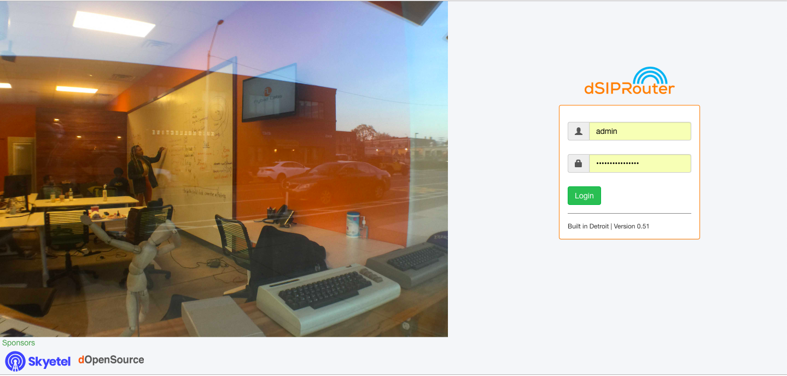

1.10.1.5.1. Upgrade dSIPRouter
In this section we will show you how to upgrade from 0.522 to 0.523.
Before starting the upgrade process you will need to backup your kamailio database using the following command:
cd /opt/
mysqldump kamailio > kamailio-bk.sql
After you’ve backed up your database you can now uninstall dsiprouter v0.50 by running the following commands:
cd /opt/dsiprouter
./dsiprouter.sh uninstall
Once the uninstall is complete you will need to either move or delete the /dsiprouter directory using the following command.
mv /dsiprouter /usr/local/src (moving directory)
Alternatively:
rm -r /dsiprouter (removing directory)
Installing dsiprouter v0.523
cd /opt/
apt-get update
apt-get install -y git curl
cd /opt
git clone -b v0.523 https://github.com/dOpensource/dsiprouter.git
cd dsiprouter
./dsiprouter.sh install
Note: please take note of the credentials given after the script has completed.
After the install is completed you can now restore your kamailio database using the following command:
cd /opt/
mysql kamailio < kamailio-bk.sql
mysql kamailio -e "alter table dsip_multidomain_mapping add column domain_list_hash varchar(255) after domain_list;"
Now please restart dsiprouter using the following commands:
cd /opt/disprouter/
./dsiprouter.sh restart
After the install is complete and the dsiprouter service has been restarted, the login screen should now reflect v0.51 and you should be able to login with the dsiprouter credentials provided after the install completed.
